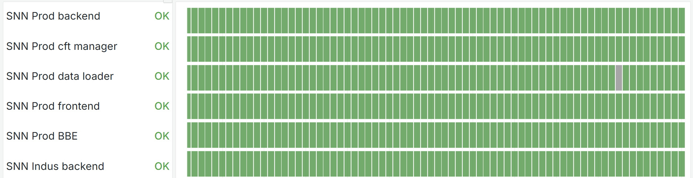
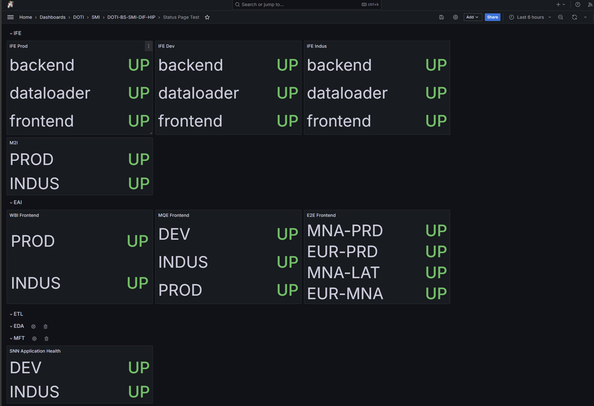
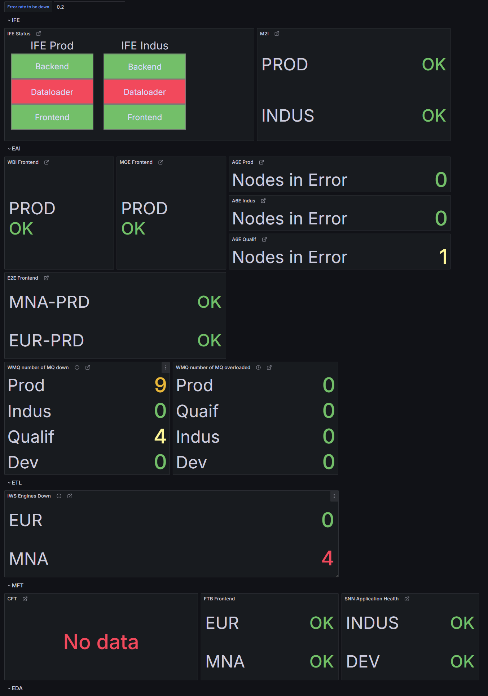
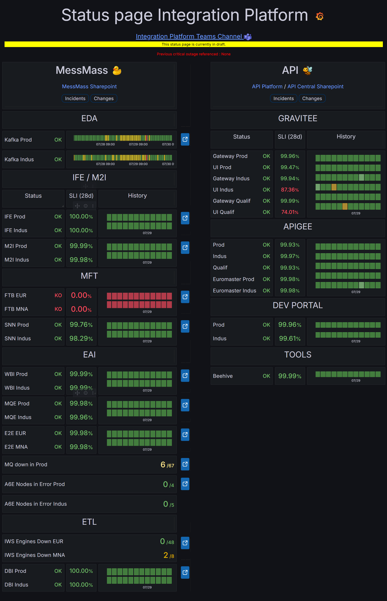

Status Page Grafana - MessMass
Ce projet a été réalisé durant mon stage de fin d'études au sein de l'équipe MessMass de Michelin. L'objectif était de concevoir et de mettre en œuvre une status page permettant de surveiller en temps réel l'état des middleware critiques de l'entreprise à travers un tableau de bord intuitif construit avec Grafana et alimenté par Prometheus. En 24 semaines, la solution a évolué d'une preuve de concept simple à un outil riche qui présente les statuts de quinze middleware internes et externes, l'historique des incidents, des indicateurs de qualité de service (SLI/SLO) et un accès approfondi (drill-down) pour le diagnostic.
Contexte et objectifs
Dans le cadre du programme OneSystem IT Platforms, l'équipe MessMass cherchait à améliorer l'observabilité de ses middleware (EDA, MFT, EAI, IFE/M2I, ETL). La status page devait répondre à plusieurs objectifs : fournir une vision synthétique de l'état des services, détecter rapidement les défaillances, suivre les niveaux de service et offrir un accès à des informations détaillées sans surcharger l'interface. La solution devait également s'intégrer dans l'écosystème existant (Grafana, Prometheus, ServiceNow) et respecter des standards graphiques pour être reprise facilement par d'autres équipes.
Fonctionnalités clés
- Monitoring en temps réel de quinze middleware internes et externes via Prometheus et divers exporters (Blackbox, OpenTelemetry, scripts custom).
- Indicateurs visuels clairs : statut global (OK/KO/Maintenance), couleurs et icônes normalisées pour chaque service.
- Historique des incidents avec liens vers les tickets ServiceNow et les pages SharePoint de suivi.
- Calcul et affichage des indicateurs de niveau de service (SLI) et du burn rate des SLO : les performances sont surveillées et comparées à des objectifs.
- Fonction drill-down permettant d'afficher la liste détaillée des composants et des nœuds d'un middleware, avec leurs statuts individuels.
- Organisation par domaine fonctionnel (EDA, MFT, EAI, IFE/M2I, ETL) afin de structurer le tableau de bord et de faciliter la navigation.
- Intégration des données issues d'une API interne pour enrichir la page avec des informations provenant d'autres squads.
- Documentation utilisateur et technique complète, lignes directrices de standardisation graphique et script d'installation simplifié pour garantir la maintenabilité.
Architecture et mise en œuvre
La status page s'appuie sur une architecture d'observabilité flexible. Les métriques sont collectées par Prometheus via plusieurs canaux : le Blackbox Exporter pour mesurer la disponibilité des services (HTTP, ping), des collecteurs OpenTelemetry pour exporter les jauges internes (file d'attente, nombre de messages), des scripts Python et des tests K6 pour vérifier la réactivité des APIs. Un service REST expose également des informations consolidées au format JSON.
Grafana interroge ces sources et présente les résultats dans des panneaux personnalisés. La première version utilisait simplement des tableaux et des jauges binaires. Des itérations successives ont amené l'utilisation du panel Canvas pour disposer des cartes colorées et dynamiques, et de panneaux combinés affichant à la fois le statut, l'historique et les SLI. Des requêtes PromQL calculent les statuts et les seuils d'alerte. Les liens vers ServiceNow et SharePoint sont générés dynamiquement.
Évolution du projet
Le développement s'est déroulé en plusieurs étapes distinctes :
- 1re version - PoC Blackbox Exporter : Une preuve de concept simple, basée uniquement sur des tests de disponibilité avec le Blackbox Exporter. Les statuts étaient binaires (up/down) et l'interface très épurée.
- 2e version - Nouveaux statuts et visualisations tests : Introduction de statuts plus détaillés (maintenance, erreur, avertissement) et expérimentations avec des blocs dynamiques sous Grafana. Cette version a permis de valider des idées mais la disposition restait confuse.
- 3e version - Structuration par domaine et API : Réorganisation par domaines fonctionnels (EDA, MFT, EAI, IFE/M2I, ETL) et intégration des données de l'équipe API. Ajout des indicateurs SLI/SLO et amélioration de l'ergonomie.
- Version finale - Validation par la squad HIP : Harmonisation des couleurs et icônes, ajout d'un bandeau d'information et de liens contextuels. Un formulaire de feedback a été diffusé et a permis d'ajuster le format des SLI, la pertinence des informations et l'emplacement des liens.
Illustrations des versions
Afin de mieux visualiser l'évolution de la status page au cours des itérations, voici quelques captures d'écran représentatives des différentes versions du tableau de bord. Elles mettent en évidence la montée en complexité et la recherche d'une interface claire pour suivre l'état des services.

Version PoC
Première preuve de concept se limitant à la vérification de la disponibilité via le
Blackbox Exporter. Les statuts sont binaires (up/down) et l'interface très épurée.

Première version
Introduction de cartes dynamiques pour chaque environnement (Prod, Dev, Indus).
Les statuts sont toujours simplifiés, mais la disposition et le langage visuel se
précisent.

Version tests
Expérimentation avec des seuils et codes couleur. Les sections sont
réorganisées et de nouveaux indicateurs apparaissent (nombre de nœuds en erreur,
etc.).

Version finale
Version validée par la squad, présentant les statuts, l'historique des incidents,
les indicateurs SLI/SLO et un bandeau d'informations pour chaque domaine
fonctionnel.
Limitations et perspectives
- Accès restreint : la status page est actuellement réservée aux utilisateurs disposant d'un compte Grafana. Une évolution envisagée est la publication d'une version publique avec authentification légère, voire une exportation vers un site statique accessible à tous les collaborateurs.
- Homogénéisation des statuts : chaque middleware a ses propres règles d'erreur et de seuils. L'uniformisation des indicateurs et des codes couleur reste un chantier pour garantir une lecture cohérente.
- Automatisation des tests et du déploiement : les scripts K6 et l'intégration continue peuvent être améliorés pour industrialiser la mise à jour de la page et la validation des nouveaux services.
- Extension du périmètre : la méthodologie et la charte graphique pourraient être appliquées à d'autres squads DOTI ou à des services externes (database, réseau) en adaptant les collecteurs et les indicateurs.
Notions utilisées
- Grafana pour la visualisation et l'agencement des panneaux.
- Prometheus et ses exporters (Blackbox, OpenTelemetry) pour la collecte et l'exposition des métriques.
- K6 pour les tests de charge et l'évaluation des temps de réponse des APIs.
- Canvas panel, table panel et autres plugins Grafana pour la construction de cartes interactives.
- Python, Shell et API REST pour l'agrégation, la transformation et l'exposition des données.
- Rédaction de documentation utilisateur et technique, création d'un guide de charte graphique pour standardiser la page.